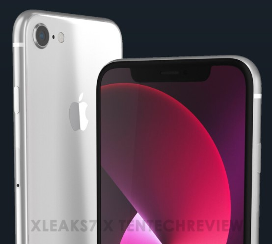
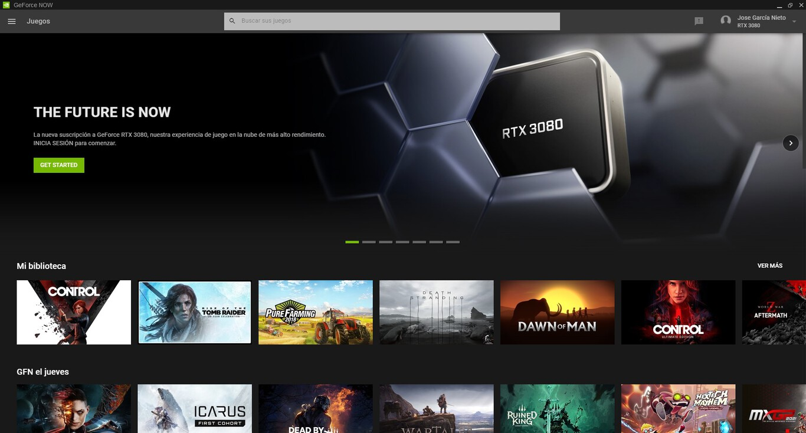

iPhone SE 2022

Si Apple sigue fiel a su tradición de los últimos años, esta primavera podríamos presenciar el
lanzamiento de un nuevo iPhone SE. Y, como es costumbre por estas fechas, ya han empezado a surgir
rumores relacionados al futuro terminal de la compañía.
En este artículo vamos a contarte todo lo que sabemos hasta el momento sobre el sucesor del iPhone SE
2020, un smartphone que está destinado a convertirse, un año más, en la alternativa más asequible para
ingresar al ecosistema de Apple.
Continuara...
NVIDIA GeForce Now RTX 3080

Cuando antaño jugaba al buscaminas de Messenger Live con mis amigos y pensaba que aquello era el futuro,
no imaginaba que unos cuantos años después iba a ser posible jugar en una calidad sobresaliente a casi
cualquier juego, sin apenas latencia, en mi portátil y sin tener que tener
los componentes más potentes del mercado. No imaginaba, ni por asomo, que la nube iba a llegar a estas
cotas de potencia.
A estas alturas de la película servicios como Google Stadia, Microsoft Cloud Gaming o NVIDIA GeForce Now
no nos resultan ajenos y extraños. Todos ellos han evolucionado bastante desde su lanzamiento, pero
NVIDIA GeForce Now ha sido la que ha dado un paso más allá y ha lanzado una nueva suscripción, RTX 3080,
que nos promete jugar en 1.440p a 120 FPS. Desde Xataka ya hemos tenido ocasión de probar esta apuesta
de NVIDIA y esta ha sido nuestra experiencia.
Continuara...